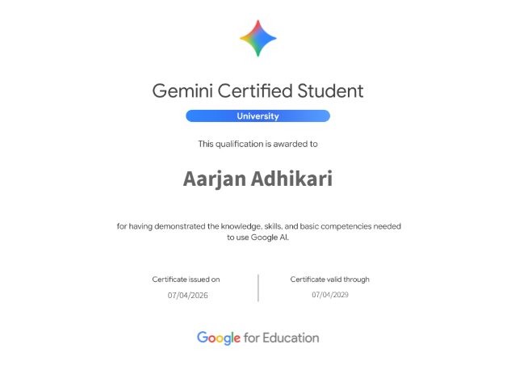
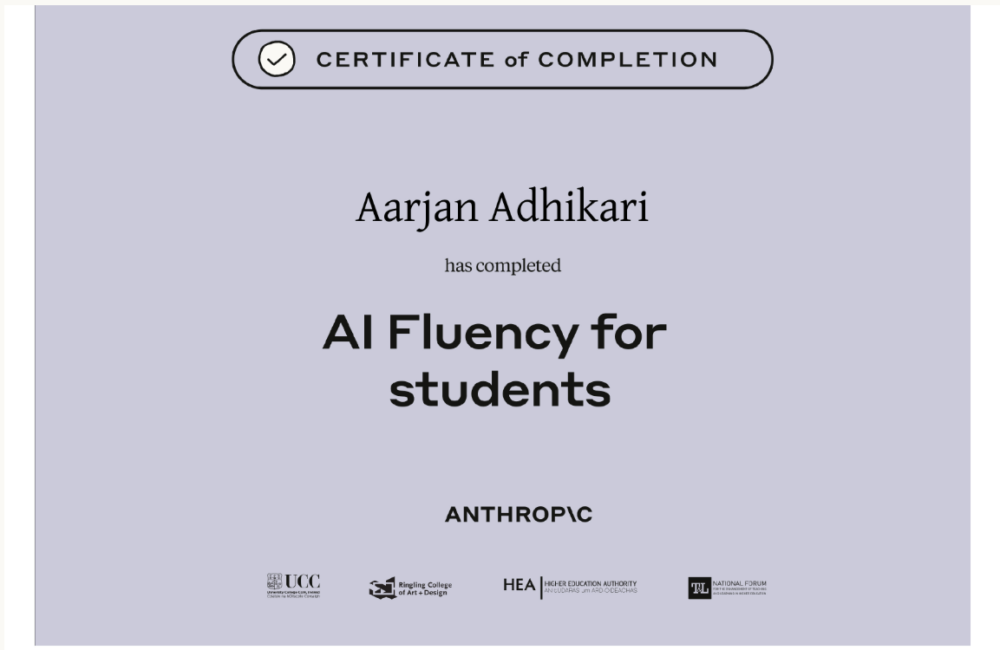
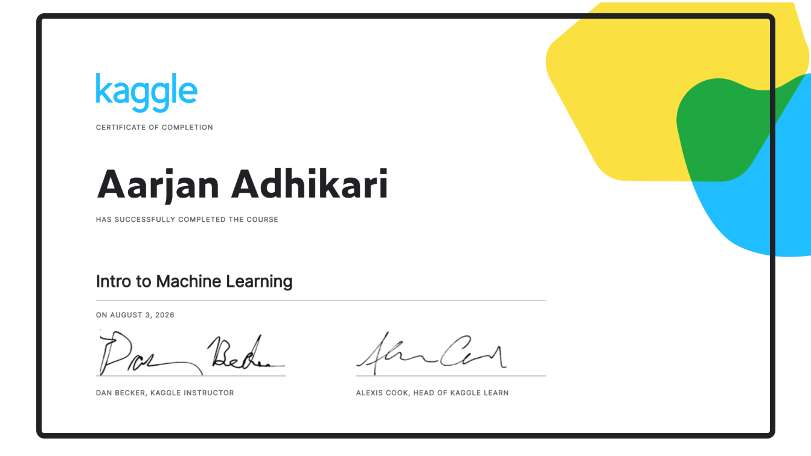
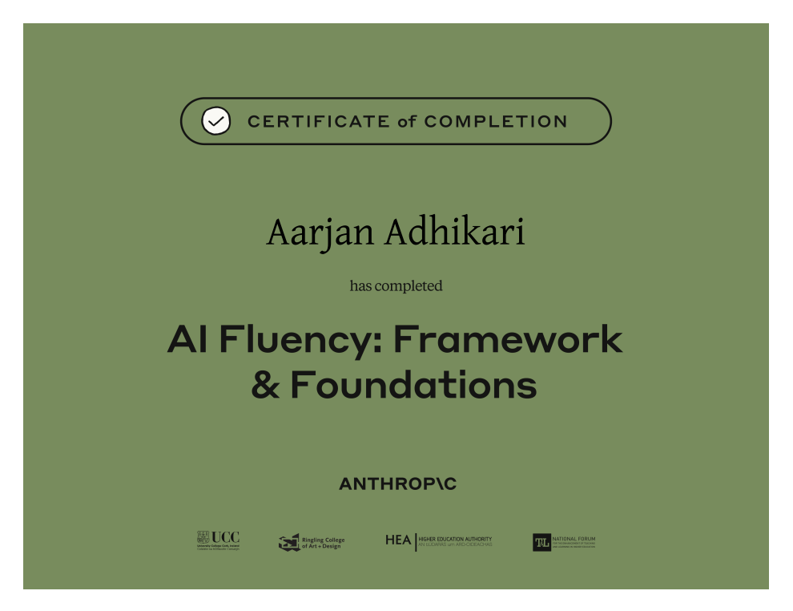

Demonstrated foundational knowledge of generative AI concepts and proficiency in utilizing Gemini tools for software development, technical troubleshooting, and system integration.

Completed Anthropic Education's AI Fluency for Students program, covering responsible AI use, prompt design, critical evaluation of AI outputs, and effective human-AI collaboration.

Completed Kaggle's Introduction to Machine Learning course, covering data preparation, feature selection, Decision Trees, Random Forests, model validation, and regression using Python, Pandas, and scikit-learn.

Built practical AI collaboration skills through Anthropic's 4D Framework.
Completed a practical Y Combinator startup program through Forage, gaining hands-on exposure to startup fundamentals.